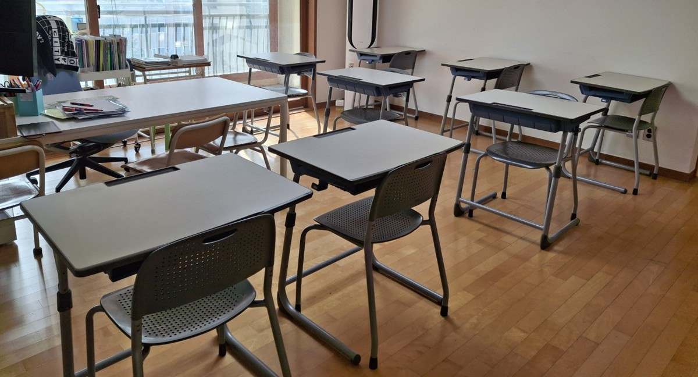
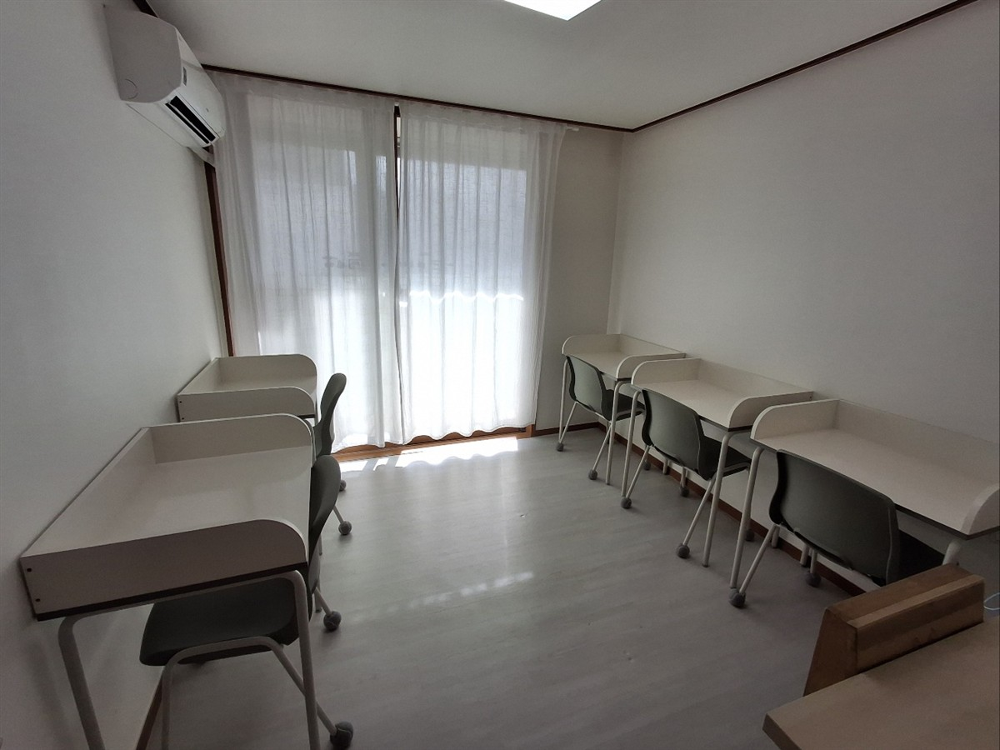

몇 년을 배워도 문법이 정리되지 않았나요? 보베영어는 문법을 뿌리부터 이해시키고, 한 명 한 명 꼼꼼히 확인합니다.
상담 문의하기보라동에서 초등 고학년부터 중·고등학생까지 지도하는 영어공부방입니다.
외우는 문법이 아니라 원리를 이해하는 문법. 학교 시험은 물론 응용문제에서도 흔들리지 않게 합니다.
소수 인원으로 진행하며 학생마다 이해도를 꼼꼼하게 체크하고 관리합니다.
시험 직전에만 몰아치지 않고 평소 수업을 꾸준히 쌓아, 내신은 그 결과로 따라옵니다.
보.베.영 = 보라 베이직 영어 (Bora Basic English)
창의성과 독창성을 상징하는 보라색, 그리고 우리 동네 보라동의 뜻을 함께 담았습니다.
가장 기본에 충실한 영어. 기초부터 탄탄하게 다집니다.
소수 인원이 집중할 수 있는 조용한 공간입니다.


대상: 초등 고학년 ~ 중·고등학생
| 반 | 요일 | 시간 |
|---|---|---|
| 월수반 | 월 · 수 | 상담 시 안내 |
| 화목반 | 화 · 목 | 상담 시 안내 |
| 월금반 | 월 · 금 | 상담 시 안내 |
| 수금반 | 수 · 금 | 상담 시 안내 |
※ 시간표와 수업료는 상담 후 안내해 드립니다.